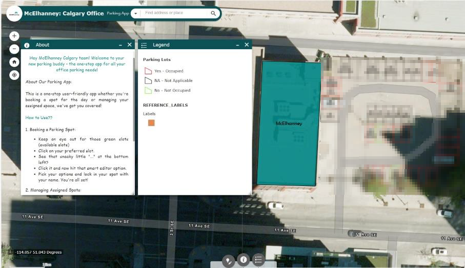

Office parking management web app
A web app where staff see which spaces are free and book or manage theirs. I georeferenced and digitized the parking spaces in ArcGIS Pro, built the interactive map in ArcGIS Web AppBuilder, set up feature layers for the space data, and designed the interface with custom widgets. It inventoried 40+ parking assets and was used by 100+ employees.
Key technologies: ArcGIS Pro, ArcGIS Web AppBuilder, feature layers, custom widgets
View the app screenshotWork project at McElhanney. Screenshot with names blurred.